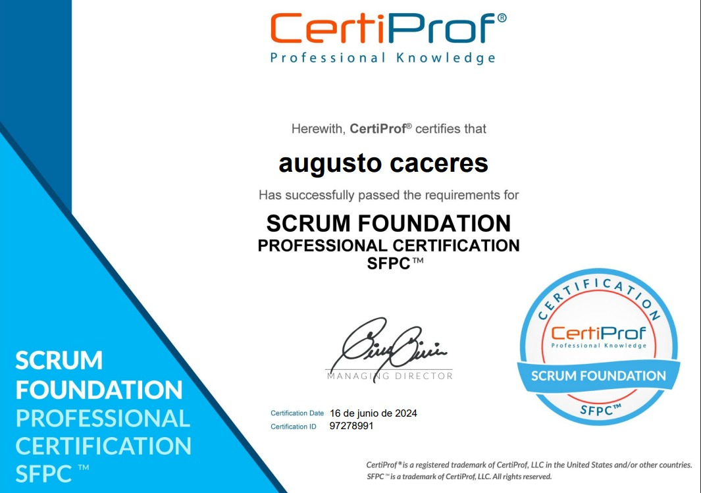
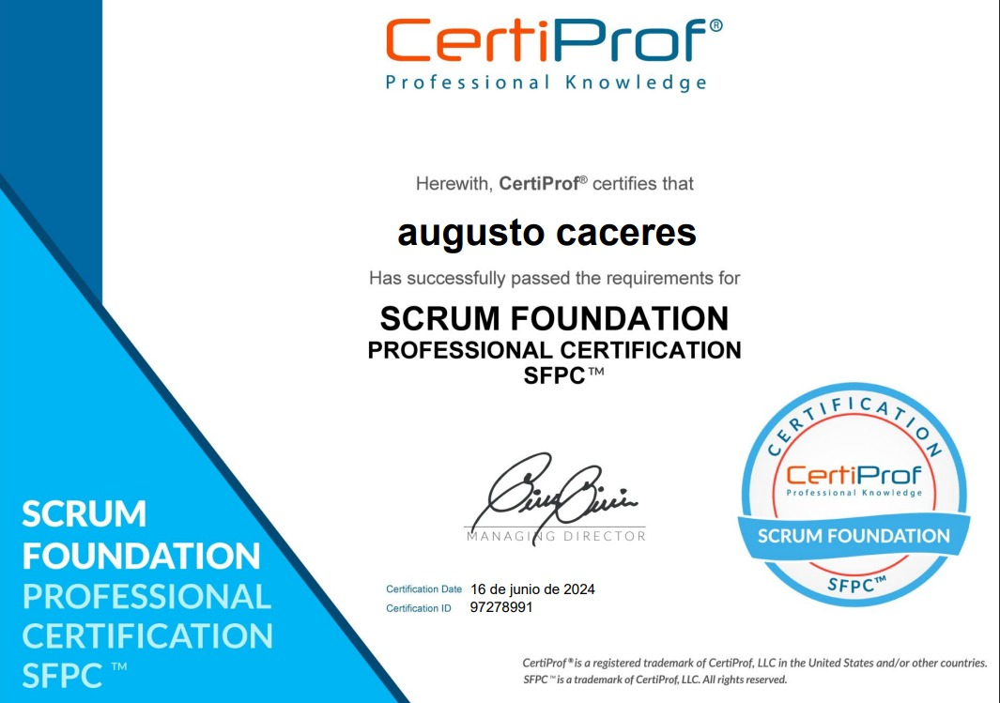

Certificaciones y reconocimientos.
Certificado en Dirección de Proyectos: Acreditación en la metodología ágil Scrum, que se utiliza para gestionar proyectos de software de manera flexible y eficiente.
Certificado en Dirección de Proyectos: Acreditación en la metodología ágil Scrum, que se utiliza para gestionar proyectos de software de manera flexible y eficiente.
